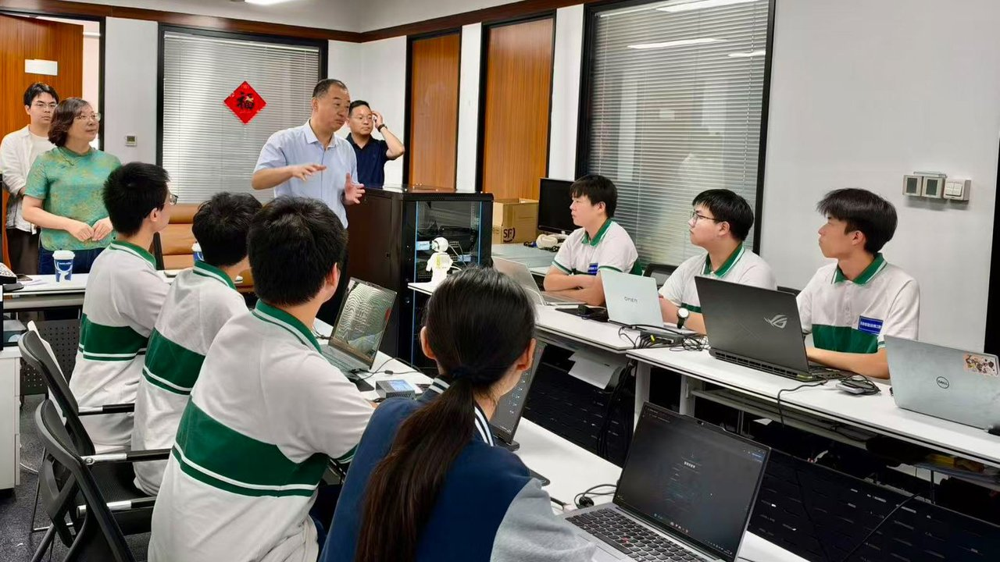

引 言
2026 年上海市职业院校学生技能大赛顺利举办。我校计算机系择优遴选优秀学子组建参赛队伍，与全市近三十支代表队同场比拼、以技争锋。参赛师生历经高强度、高标准的层层考核，在全市众多参赛强队中脱颖而出，取得优异竞赛成绩，成功获得世界职业院校技能大赛参赛资格。备赛阶段，团队开展封闭式专项集训，对标赛事标准精研方案、锤炼技能。在 2026 世界职业院校技能大赛争夺赛中奋勇拼搏，斩获新一代信息技术赛道金奖、电子电器与集成电路赛道银奖、人工智能赛道银奖。

优异成绩的取得，离不开学校的高度重视。备赛期间，校党委书记常峥斌、校长滕琴多次看望慰问师生，详细了解训练进度和保障需求，现场协调解决场地、设备、后勤等实际问题，勉励大家坚定信心、沉着应战；出征前夕，校领导专程来到训练现场为参赛团队加油鼓劲，传递全校师生的殷切期望。学校将大赛备赛作为深化教育教学改革的重要抓手，统筹教务、学工、后勤及相关系部等各方力量，在训练时间、场地资源、物资保障等方面给予全力支持，形成了“上下一心、协同作战”的备赛格局，为师生安心备赛、全力冲刺筑牢了坚实后盾。